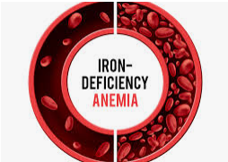
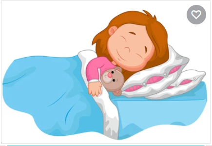
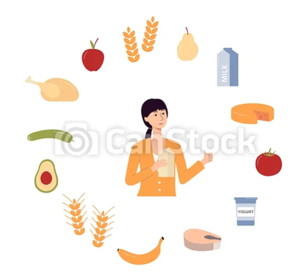
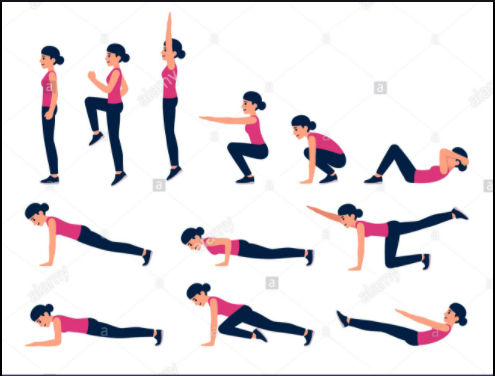
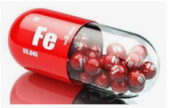
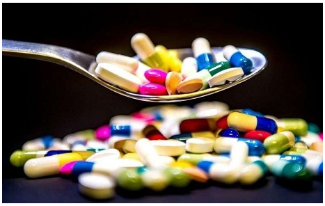
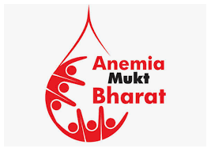
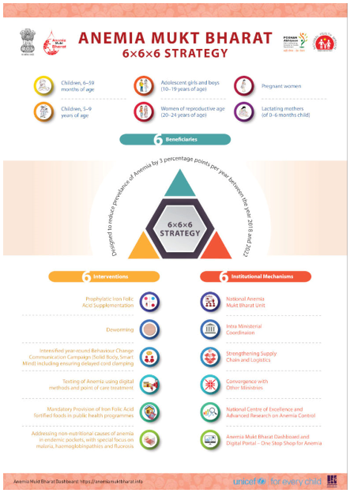
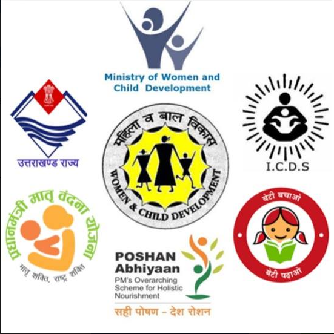

|

|
What is Anemia
Iron deficiency anemia is mainly seen in pregnent women and girls(age above 12)
a condition marked by a deficiency of red blood cells or of hemoglobin in the blood, resulting in pallor and weariness.
Anaemia is defined as a reduction in either the percentage of red blood cells (hematocrit), or a reduction in the
concentration of haemoglobin in a sample of venous blood when compared with reference values. Iron deficiency is the most
common anaemia in the general population.
it is due to insufficient iron. Without enough iron, your body can't produce enough of a substance
in red blood cells that enables them to carry oxygen (hemoglobin). As a result, iron deficiency anemia may leave you tired
and short of breath.
You can usually correct iron deficiency anemia with iron supplementation. Sometimes additional tests or treatments for
iron deficiency anemia are necessary, especially if your doctor suspects that you're bleeding internally.
|
|
About
|


|
Symptoms
The symptoms of iron deficiency anemia can be mild at first, and you may not even notice them.
According
to the American Society of Hematology (ASH), most people don’t realize they have mild anemia until they have
a routine blood test.
The symptoms of moderate to severe iron deficiency anemia include:
- general fatigue
- weakness
- pale skin
- shortness of breath
- dizziness
- strange cravings to eat items that aren’t food, such as dirt, ice, or clay
- a tingling or crawling feeling in the legs
- tongue swelling or soreness
- cold hands and feet
- fast or irregular heartbeat
- brittle nails
- headaches
Causes
Iron deficiency anemia occurs when your body doesn't have enough iron to produce hemoglobin.
If you aren't consuming enough iron, or if you're losing too much iron, your body can't produce enough
hemoglobin, and iron deficiency anemia will eventually develop
Causes of iron deficiency anemia include:
- Inadequate iron intake
Eating too little iron over an extended amount of time can cause a shortage in your body. pregnant women
and young children may need even more iron-rich foods in their diet.
- Pregnancy or blood loss due to menstruation
Heavy menstrual bleeding and blood loss during childbirth are the most common causes of iron deficiency
anemia in women of childbearing age.
- Internal bleeding
Certain medical conditions can cause internal bleeding, which can lead to iron deficiency anemia. Examples
include an ulcer in your stomach, polyps in the colon or intestines, or colon cancer. Regular use of pain
relievers, such as aspirin, can also cause bleeding in the stomach.
|
|
|
|
Risk factors
These groups of people may have an increased risk of iron deficiency anemia:
- Women
Because women lose blood during menstruation, women in general are at greater risk of iron deficiency anemia.
- Infants and children
Infants, especially those who were low birth weight or born prematurely, who don't get enough iron from breast milk or formula may be
at risk of iron deficiency. Children need extra iron during growth spurts. If your child isn't eating a healthy, varied diet, he or she
may be at risk of anemia.
- Vegetarians
People who don't eat meat may have a greater risk of iron deficiency anemia if they don't eat other iron-rich foods.
- Frequent blood donors
People who routinely donate blood may have an increased risk of iron deficiency anemia since blood donation can deplete iron stores. Low
hemoglobin related to blood donation may be a temporary problem remedied by eating more iron-rich foods. If you're told that you can't donate
blood because of low hemoglobin, ask your doctor whether you should be concerned.
Complications
Mild iron deficiency anemia usually doesn't cause complications. However, left untreated, iron deficiency anemia can become severe and lead to
health problems, including the following:
- Heart problems
Iron deficiency anemia may lead to a rapid or irregular heartbeat. Your heart must pump more blood to compensate for the lack
of oxygen carried in your blood when you're anemic. This can lead to an enlarged heart or heart failure.
- Problems during pregnancy
In pregnant women, severe iron deficiency anemia has been linked to premature births and low birth weight babies.
But the condition is preventable in pregnant women who receive iron supplements as part of their prenatal care.
- Growth problems
In infants and children, severe iron deficiency can lead to anemia as well as delayed growth and development. Additionally,
iron deficiency anemia is associated with an increased susceptibility to infections.
|
Prevention
|

Proper Sleep
|

healthy Diet
|

Daily Excercise
|
|
|
|
Prevention of Anemia
Anemia, like fever, is a manifestation, not a disease. It can be prevented and treated
You can reduce your risk of iron deficiency anemia by choosing iron-rich foods.
Foods rich in iron include:
- Red meat, pork and poultry
- Seafood
- Beans
- Dark green leafy vegetables, such as spinach
- Dried fruit, such as raisins and apricots
- Iron-fortified cereals, breads and pastas
- Peas
Your body absorbs more iron from meat than it does from other sources. If you choose to not eat meat, you may need to increase your
intake of iron-rich, plant-based foods to absorb the same amount of iron as does someone who eats meat.
Choose foods containing vitamin C to enhance iron absorption
You can enhance your body's absorption of iron by drinking citrus juice or eating other foods rich in vitamin C at the same time that you
eat high-iron foods. Vitamin C in citrus juices, like orange juice, helps your body to better absorb dietary iron.
Vitamin C is also found in:
- Broccoli
- Grapefruit
- Kiwi
- Leafy greens
- Melons
- Oranges
- Peppers
- Strawberries
- Tangerines
- Tomatoes
|
Preventing iron deficiency anemia in infants
To prevent iron deficiency anemia in infants, feed your baby breast milk or iron-fortified formula for the first year. Cow's milk isn't a
good source of iron for babies and isn't recommended for infants under 1 year. After age 6 months, start feeding your baby iron-fortified
cereals or pureed meats at least twice a day to boost iron intake. After one year, be sure children don't drink more than 20 ounces (591
milliliters) of milk a day. Too much milk often takes the place of other foods, including those that are rich in iron
|
Treatment
|

Iron supplements
Iron tablets can help restore iron levels in your body. If possible, you should take iron
tablets on an empty stomach, which helps the body absorb them better. If they upset your stomach,
you can take them with meals. You may need to take the supplements for several months. Iron
supplements may cause constipation or black stools.
|

Other medicine
- acid tablet
- vitamin C tablet
- transfusions of red blood cells in critical condition
- acid supplement
|
|
|
|
Prophylactic dose and regime for Iron Folic Acid supplementation
Age Group Dose and regime
- Children 6–59 months of age
Biweekly, 1 ml Iron and Folic Acid syrup Each ml of Iron and Folic Acid syrup containing 20 mg elemental Iron + 100
mcg of Folic Acid Bottle (50ml) to have an ‘auto-dispenser’ and information leaflet as per MoHFW guidelines in the mono-carton
- Children 5–9 years of age
Weekly, 1 Iron and Folic Acid tablet Each tablet containing 45 mg elemental Iron + 400 mcg Folic Acid, sugar-coated, pink colour
- School-going adolescent girls and boys, 10–19 years of age & Out-of-school adolescent girls, 10–19 years of age
Weekly, 1 Iron and Folic Acid tablet Each tablet containing 60 mg elemental iron + 500 mcg Folic Acid, sugar-coated, blue colour
- Women of reproductive age (non-pregnant, non-lactating) 20–49 years
Weekly, 1 Iron and Folic Acid tablet Each tablet containing 60 mg elemental Iron + 500 mcg Folic Acid, sugar-coated, red colour
- Pregnant women and lactating mothers (of 0–6 months child)
Daily, 1 Iron and Folic Acid tablet starting from the fourth month of pregnancy (that is from the second trimester), continued
throughout pregnancy (minimum 180 days during pregnancy) and to be continued for 180 days, post-partum Each tablet containing 60 mg
elemental Iron + 500 mcg Folic Acid, sugar-coated, red colour
|
Give the above quiz and compare your result with table given below
|
| Obtained Marks |
Posibility |
Suggetion |
|
| 0 - 7 |
It is a less posibility to you have an amemia |
Pay attention on your diet |
Have a diet high in iron-rich foods and vitamin C
Inclued these material in your diet
Red meat
dark green, leafy vegetables
dried fruits
nuts
|
| 8-13 |
There is posiblity to you have an anemia |
Please consern your doctor and have a blood test |
Include more iron suppliments and vitamin C in your diet
Foods high in iron include:
Meat, such as lamb, pork, chicken, and beef
beans
pumpkin and squash seeds
leafy greens, such as spinach
raisins and other dried fruit
eggs
seafood, such as clams, sardines, shrimp, and oysters
iron-fortified dry and instant cereals
Foods high in vitamin C include:
Fruits such as oranges, grapefruits, strawberries, kiwis, guavas, papayas, pineapples, melons, and mangoes
broccoli
red and green bell peppers
Brussels sprouts
cauliflower
tomatoes
leafy greens
|
| 14-20 |
There is huge posiblity to You have an anemia |
Please consern your doctor to start treatment as soon as posible |
Include more iron suppliments and vitamin C in your diet
Iron tablets can help restore iron levels in your body
(we suggest do not take any medicine by our own please consern your doctor)
|
Government policies
|
Anemia Mukt Bharat
|

|
- Anaemia Mukt Bharat (AMB) strategy was launched in 2018 with the objective of reducing anaemia prevalence among children, adolescents
and women in reproductive age group.
- Operational guidelines, training and IEC material were developed and shared with the States & UTs
for effective implementation of this strategy.
- All the States and UTs have initiated activities regarding implementation of AMB namely
prophylactic Iron folic acid supplementati- on identification of anaemic cases, referral & treatment and others.
- Currently, programme is
in its initial stages and working towards achieving reduction in anaemia prevalence particularly in women, children and adolescents.
The 6x6x6 strategy
- The 6x6x6 strategy under AMB implies six age groups, six interventions and six institutional mechanisms.
- The strategy focuses on ensuring
supply chain, demand generation and strong monitoring using the dashboard for addressing anaemia, both due to nutritional and non-nutritional causes.

|

|
|
The six population groups under the AMB strategy are:
- Children (6-59 months)
- Children (5-9 years)
- Adolescents girls and boys (10-19 years)
- Pregnant women
- Lactating women
- Women of Reproductive Age (WRA) group (15-49 years)
The six interventions are:
- Prophylactic Iron and Folic Acid Supplementation
- Deworming
- Intensified year-round Behaviour Change Communication (BCC) Campaign and delayed cord clamping
- Testing of anaemia using digital methods and point of care treatment
- Mandatory provision of Iron and Folic Acid fortified foods in Government-funded health programmes
- Addressing non-nutritional causes of anaemia in endemic pockets with special focus on malaria, hemoglobinopathies
and fluorosis and the six institutional mechanisms.
The six institutional mechanisms are:
- Inter-ministerial coordination
- National AnemiaMukt Bharat Unit
- National Centre of Excellence and Advanced research on Anemia Control
- Convergence with other ministries
- Strengthening the supply chain and logistics
- AnemiaMukt Bharat Dashboard and Digital Portal- one-stop shop for Anemia.
|
Poshan Abhiyaan
|

|
- The reduction of anemia is one of the important objectives of the POSHAN Abhiyaan launched in March 2018.
- the Anemia Mukt Bharat strategy has been designed to reduce prevalence of anemia by 3 percentage points per year
among children, adolescents and women in the reproductive age group (15–49 years),
between the year 2018 and 2022.
- The strategy is estimated to reach out to 450 million benefi ciaries with specific anemia
prevalence targets for year 2022 to be achieved among various population groups
- The Prime Minister’s Overarching Scheme for Holistic Nourishment (POSHAN Abhiyaan), or the National Nutrition Mission, is the
Government of India’s flagship programme to improve nutritional outcomes for children, pregnant women and lactating mothers.
- NITI Aayog has played a critical role in shaping the POSHAN Abhiyaan. The National Nutrition Strategy, released by NITI Aayog in
September 2017
l
TARGETS
- The mission has a target to reduce stunting, undernutrition, and low birth weight by 2 per cent per annum, and anaemia among
children (of 6-59 months) and women/adolescent girls (15-49 years) by 3 per cent annually.
- It would also strive to achieve reduction in stunting from 38.4% (NFHS-4) to 25% by 2022 (Mission 25 by 2022).
- It will be implemented in three phases: 2017-18, 2018-19 and 2019-20. 315 ‘high burden’ are to be covered in the first
phase, 235 in next and the remaining in last.
SALIENT FEATURES
- NNM as an apex body will monitor, supervise, fix targets and guide the nutrition related interventions through the life
cycle concept.
- Mapping of various schemes contributing under malnutrition
- ICT (Information and Communication Technology) based real time monitoring system.
- Incentivizing states/UTs for meeting targets
- Incentivizing Anganwadi Workers (AWW) for using IT based tools and eliminating the need for registers
- Measurement of height of children at Anganwadi Centres
- Social Audits to track the health progress of the children
- Setting-up Nutrition Resource Centres.
|
Here some websites from Government
|
|